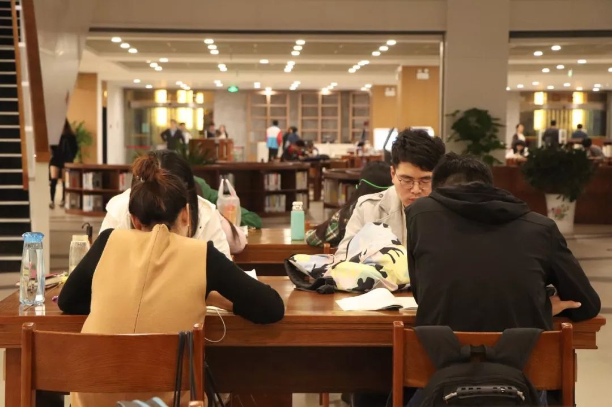
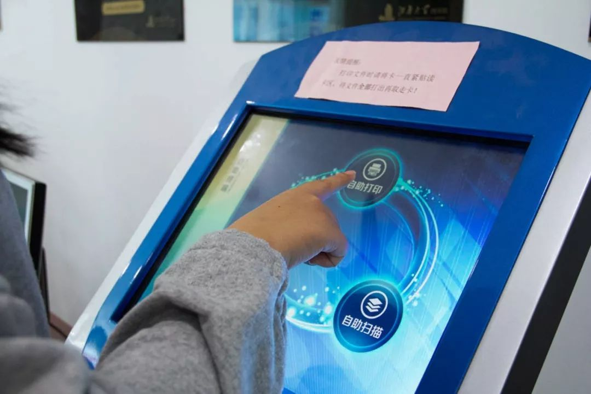
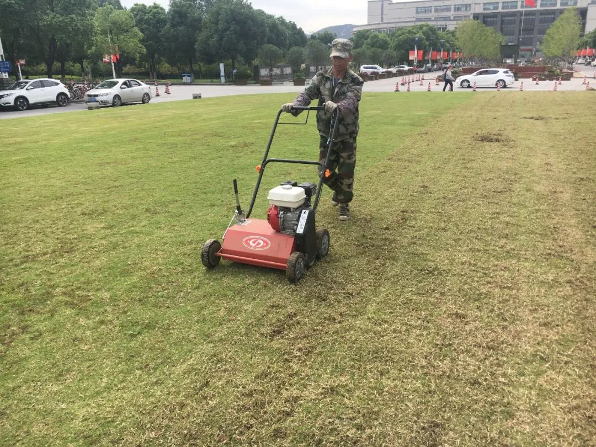

.jpg)
.jpg)


一分钟，江南大学会发生什么？
中国的每一分钟都发生着不同的事
那在江南的一分钟里
又会发生什么呢？
校园篇
一分钟，e江南门户登录8次。
一分钟，江南大学网站访问0.5次
一分钟，学生教室刷卡200次。
一分钟，277人在餐厅就餐
一分钟，全校用电90.13度
一分钟，全校用水2.87吨
一分钟，全校完成基建投资456.62元
一分钟，全校完成中央专项348.74元
一分钟，13.8人在牡丹盛花期走进江大赏花
图书馆篇
江南大学公益图书馆建筑面积 52217 平方米 , 可容纳图书 270 万册，C区阅览座位4014 个 ，是目前江苏省内单体建筑最大的高校图书馆之一。在图书馆里：

一分钟，可以轻松找到一个舒适的座位
一分钟，可以预约一间自习室
一分钟，可以自助借阅读多本自己喜欢的书
也可以自助还书 ，相当便捷

一分钟 ，可以自助复印或打印一份资料
实验室篇
江南大学每个学院都有专业实验室，同时我们还有食品科学与技术国家重点实验室、国家功能食品工程技术研究中心等，拥有透射电子显微镜、液相色谱串联四级飞行时间质谱联用仪、全数字化核磁共振波谱仪等设备。在实验室：
一分钟 ，可以倒10个平板培养基
一分钟 ，可以清洗10个试管
一分钟，可以灌胃3只小鼠
一分钟 ，生化酶标仪分析96个样品
一分钟，PCR延申扩增1kbp片段
体育运动篇
为发挥高校体育精神育人功能，让体育精神浸润大学校园，让体育精神服务人才培养，2011年9月以来，我校科学谋划、精心设计，紧紧围绕人才培养，大力实施“体育精神培育实践工程”，将体育精神培育纳入大学精神塑造与完善的核心内容，并立其为学生健康体魄、健强意志、健全人格的一项长期举措。
一分钟，在篮球场投篮14次
一分钟，在跑道上慢跑300米
一分钟，骑行1000米

一分钟，仰卧起坐 50个 ，俯卧撑40个
一分钟，从起飞到落地
一分钟，可以完成一项趣味运动项目
后勤服务篇
江南大学后勤工作注重抓细节、抓环节、讲质量、树品牌，以实际行动彰显“服务育人、管理育人”。服务内容，涵盖校园生活的点点滴滴，各块工作，在校师生有口皆碑。
一分钟，保卫处
可以利用无人机巡航校园
一分钟，在校医院
检验科医师将60份血样上机检验

一分钟，环境中心可以
修剪6平方米草坪
浇灌8平方米草坪
一分钟，在饮食中心
食堂阿姨可以切配5斤蔬菜
可以制作18份实心面筋
餐厅窗口可以打7份菜
可以盛30碗免费汤
一分钟，320人通过小黄车去往目的地
一分钟，鼋博咖啡制作2杯精美的拉花
一分钟，可在线受理网络修理1.6件
一分钟，网上办事大厅接办2件师生事务
一分钟是长的
他有六十秒，可以完成很多
一分钟是短的
他只是一小时的六十分之一
所有的精细都要由几个、
几十个或者更多一分钟叠加而成
在江南大学
每一分钟都很精彩